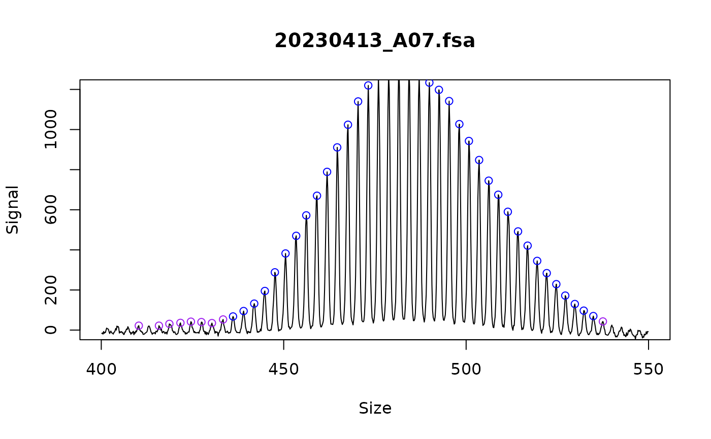

Find fragment peaks
find_fragments.RdFind fragment peaks in continuous trace data and convert to fragments_repeats class.
Usage
find_fragments(
fragments_trace_list,
smoothing_window = 21,
minimum_peak_signal = 20,
min_bp_size = 100,
max_bp_size = 1000,
...
)Arguments
- fragments_trace_list
A list of fragments_trace objects containing fragment data.
- smoothing_window
numeric: signal smoothing window size passed to pracma::savgol()
- minimum_peak_signal
numeric: minimum height of peak from smoothed trace
- min_bp_size
numeric: minimum bp size of peaks to consider
- max_bp_size
numeric: maximum bp size of peaks to consider
- ...
pass additional arguments to findpeaks, or change the default arguments we set. minimum_peak_signal above is passed to findpeaks as minpeakheight, and peakpat has been set to '[+]{6,}[0]*[-]{6,}' so that peaks with flat tops are still called, see https://stackoverflow.com/questions/47914035/identify-sustained-peaks-using-pracmafindpeaks
Details
This function is basically a wrapper around pracma::findpeaks. As mentioned above, the default arguments arguments of pracma::findpeaks can be changed by passing them to find_fragments with ... .
If too many and inappropriate peaks are being called, this may also be solved with the different repeat calling algorithms in call_repeats().
Examples
file_list <- trace::cell_line_fsa_list
test_ladders <- find_ladders(file_list[1])
#>
|
| | 0%
|
|======================================================================| 100%
fragments_list <- find_fragments(test_ladders,
min_bp_size = 300
)
# Manually inspect the ladders
plot_traces(fragments_list,
show_peaks = TRUE, n_facet_col = 1,
xlim = c(400, 550), ylim = c(0, 1200)
)
